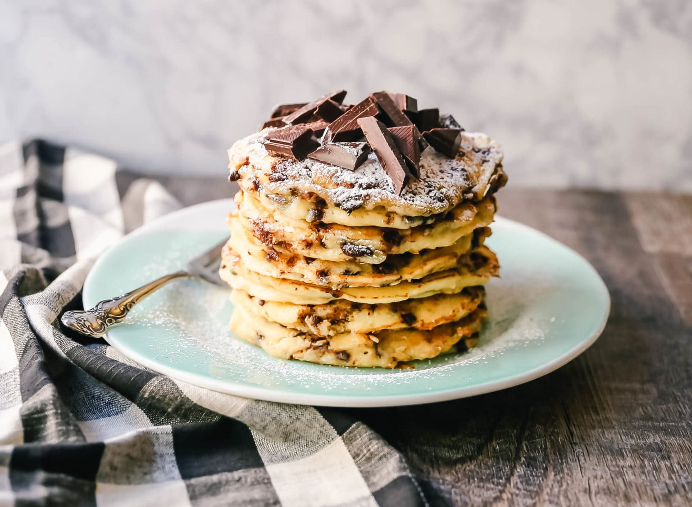

Chocolate Chip Ricotta Pancakes

Description
Chocolate Chip Ricotta Pancakes Creamy homemade one-bowl ricotta pancakes with
chocolate chips. How to make easy 5-minute chocolate chip ricotta pancakes from scratch!
Ingredients
- 2 cups Ricotta Cheese (preferably Whole Milk Ricotta)
- 1 and 1/2 cups Buttermilk
- 4 large Eggs
- 1 and 1/2 teaspoons Vanilla
- 1/2 cup + 1 Tablespoon Sugar
- 2 cups Flour
- 1 Tablespoon Baking Powder
- 1/2 teaspoon Salt
- 1 and 1/2 cups Chocolate Chips (plus more for garnish)
- Powdered Sugar
- Whipped Cream
- Maple Syrup
Steps
- In a large bowl, mix ricotta cheese, buttermilk, eggs, vanilla, and sugar until combined.
Heat skillet over medium heat.
- Fold in flour, baking powder, salt, and chocolate chips and stir until just combined,
avoiding over-mixing.
- Place a pat of butter onto the skillet and wait for it to sizzle. Pour batter in 1/2 cup
portions and cook until golden brown on each side. Lower the heat if the outside is becoming
too brown before the inside is cooked through.
- Sprinkle with powdered sugar. Drizzle with maple syrup. Sprinkle with chocolate chips and a
dollop of fresh whipped cream, if so desired.